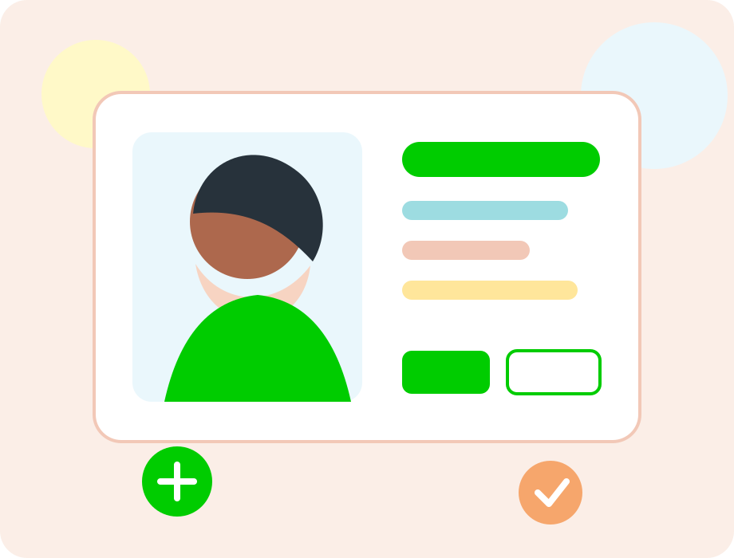
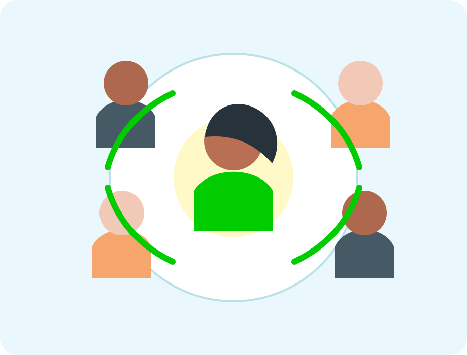
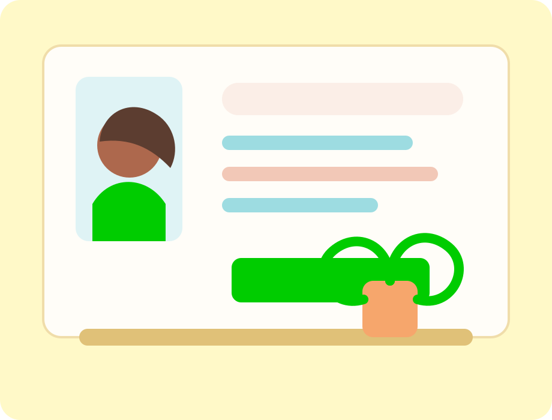
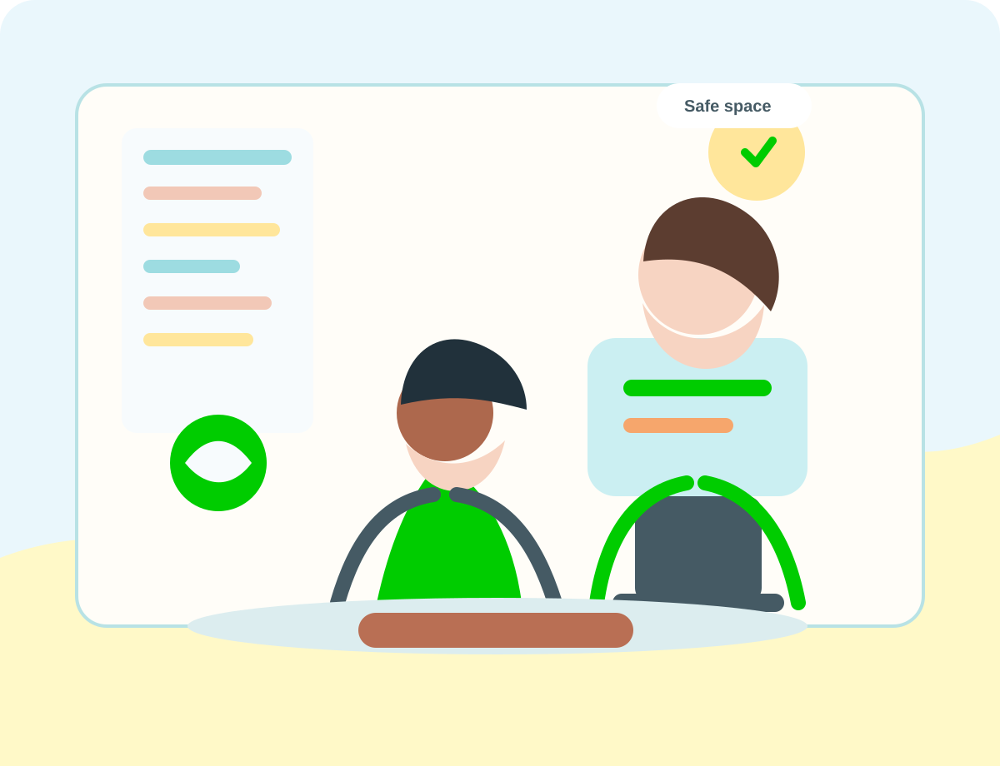

The Phoenix Sunrise
We care for you with compassion.
To turn your dreams into reality.
A compassionate rehabilitation psychology practice led by Shalini Kumar, offering counseling, addiction intervention, play therapy, and guided support for emotional, behavioural, and family concerns.
Confidential consultations for children, adolescents, adults, couples, and families.

Shalini Kumar
Rehabilitation Psychologist
MA Clinical Psychology · PGDRP · PGDCP
Mumbai consultations
Remote sessions available
Family-aware care
Addiction and rehabilitation support
Professional profile
Shalini Kumar, Rehabilitation Psychologist.
Shalini Kumar works with individuals, adolescents, parents, couples, and families through compassionate, structured, and goal-oriented psychological care.
Available for in-clinic sessions in Mumbai and remote consultations across India. Support areas include emotional wellbeing, addiction recovery, parenting, relationships, study stress, and behavioural concerns.
- MA Clinical Psychology
- PGDRP and PGDCP
- Addiction Interventionist, NIMHANS
- Certified Play Therapist
- Dream Analyst
Specialist care
Rehabilitation Psychology
Support for mental health, special needs, addiction, parenting, and relationships.
Assessment and therapy for
Focused care for emotional and behavioural concerns.
Sessions are planned around your needs, family context, strengths, and goals for healthier functioning.
Mood Disorders
Support for low mood, emotional shifts, motivation, and everyday functioning.
Anxiety Disorders
Care for worry, panic, fear, avoidance, and persistent overthinking.
Grief
Compassionate space to process loss, adjustment, and emotional pain.
Stress and Anger Management
Practical tools for calmer responses, boundaries, and self-control.
Special Needs Rehabilitation
Supportive rehabilitation work with special needs and family systems.
Positive Parenting Program
Guidance for parenting confidence, communication, routines, and care.
Our services
Care that meets you at the right stage of life.
Choose the support area that fits your concern. Appointments are available in Mumbai and through remote consultations.

Personal care
Individual Counseling
One-to-one support for emotional concerns, self-understanding, coping skills, and healthier decision-making.
Book counseling
Adolescents
Adolescent Guidance
Support for identity, confidence, peer pressure, academics, emotional regulation, and parent-child communication.
Plan guidance
Relationships
Pre-Marital and Marital Counseling
Sessions for communication, expectations, conflict patterns, trust, and healthier partnership decisions.
Start relationship care
Behaviour
Behaviour Addiction
Care for mobile, TV, and internet overuse through awareness, routines, boundaries, and family support.
Get support
Addiction
Substance Use Disorder
Intervention-informed support for substance use, motivation, relapse prevention, and family involvement.
Discuss care
Students
Exam Fear, Study Smart
Guidance for exam anxiety, study planning, attention, confidence, and smarter learning routines.
Support learning
Care approach
Compassionate, practical, and family-aware.
Understand the concern
Begin with a thoughtful conversation around the challenge, history, and goals.
Create a care direction
Plan support for emotional wellbeing, behaviour, rehabilitation, or relationships.
Build real-life change
Use practical strategies that can be carried into home, study, work, and family life.
Client feedback
Stories of clarity, confidence, and compassionate care.
Shared anonymously from people who experienced support through counseling, reflection, and practical care.
“I have seen an immense change in my life after consultation with Shalini ma'am. I started getting my confidence back and better clarity in my decisions.”
Anonymous client“My journey with ma'am has been transformational. It has played a pivotal role in bettering the quality of my life as a student and as an individual.”
Student feedback“She listened with attention and care, asked insightful questions, and helped me gain clarity while staying true to myself.”
Anonymous client“I received actionable strategies and simple tools that helped me navigate present and future problems independently.”
Client feedback“There were moments where I received more care, support, and empathy than I could ask for. Her support helped me overcome difficult challenges.”
Anonymous client“The sessions helped me understand areas that needed improvement and how I could handle situations with more confidence.”
Client feedback
Questions
Before you book.
Who conducts the consultation?
Consultations are conducted by Shalini Kumar, Rehabilitation Psychologist, MA Clinical Psychology, PGDRP, PGDCP.
Are remote consultations available?
Yes. Remote consultations are available across India and for clients located anywhere in the world.
How do I book an appointment?
Call +91 90357 78841 or email thesecondsunrise.sk@gmail.com. Consultations are by appointment only.
Appointments and location
Book a clinic or remote consultation.
Consultations are by appointment only at Dr. Rajni Gwalani's Clinic in Chembur, Mumbai, with remote sessions available across India and worldwide.
102, Jolitha Complex, First Floor, Opposite Shiva Temple, Ghatla Village Road (Ratna Stores Lane), Chembur, Mumbai.